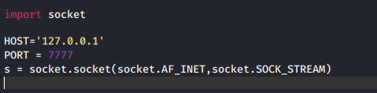

sockets:to connect 2 nodes together basically to connect to an open port and an ip adress

AF_INET consider it as ipv4
SOCK_STREAM is a port
ran foll command:

and then ran s.py script which is as follows

ran this script in another tab and the prev terminal tab gave the following output:

nc:netcat - nvlp means i m goiung to establish a listening port and i m listening on port 7777